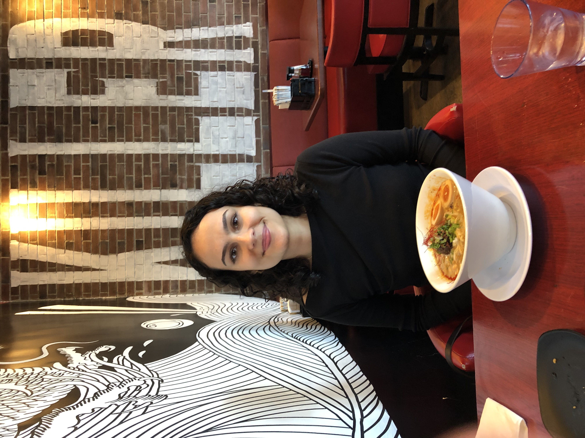

Hello my love. I wanted to give you a eternal card that would remind you of how great you are, so I made a blog post about our journey together :) To many more years of love, happy anniversary.
Let us go to the start of it all. May 12, 2023.

This picture makes me so happy, it reminds me of college and dorm life. We were sophomores in this picture, can you believe that! Everyone in this picture brings back such a warm feeling. Jason, Erik, Leonie, Lucia, all of them are so great and all of them are gone. Even Ben isn’t here right now. Who would of thought us two would be the only ones together, crazy!
I remember when I walked in still half-asleep. I said hi to Jason and heard an accent across the table. You were very pretty but I didn’t have the courage to just go up to you and say “WOW YOU’RE PRETTY, WHATS YOUR NAME”? So I just stood next to Erik talking to him and Andrew and Jason and Parker, while you were segregated with your friends. Then when Erik left his seat I decided to sit in it, and you were next to me. I had to say something now, but about what? You were the prettiest girl I had seen at UCLA, and your accent was the key to starting the conversation. You know how the rest goes :)
This is a picture of you and me at the Natural History Museum. You were so easy to talk to. I knew from this moment that we had something special :). The four hour date felt like half an hour and I knew I wanted to date you, but I didn’t want to jump the gun and rush things. I was a little nervous to say, but after basketball, with the help of my friends, I told you and I’m really glad I did.
Now the start of junior year. We stayed in contact over summer and put a lot of effort in :). I’m glad we did because that really made me want to commit and start something with you. So I told you how I view relationships and how I want something long-term, and we spent a few months figuring that out. And I’m glad we did because this year has been the best year of my life. I love you so much Tilda. You allow me to feel such a special feeling and I am forever thankful. Before you I wasn’t sure if I would ever love someone. I know that sounds silly but I seriously didn’t understand why people wanted to be in relationships. I understand it now.
You are the kindest, sweetest, funniest, silliest girl in the world. I miss you every day and I can’t get enough of you. No matter what we do, whether it be studying or going to Sawtelle is the best time. You make dating easy. You make my life so easy. I know I have someone in my corner that loves me. And I hope you do to. You can do anything you want, we can do anything we want. We’re a team, and the best team.
Fast forward to your birthday, it’s now been three months of dating. I still feel the same about you as from the start. You make me so happy and excited. You give me a special warm feeling and I will always be in the honey moon phase with you :)
Tilda, you make me a better person. You always look at things with empathy and compassion, and you help me understand and see others points of views. I love how passionate you get about topics and I’m sorry if I ever make you emotional over my opinions or beliefs. I want you to always know that I appreciate your view point even if I may not agree with it. I am learning and growing so much with you. You are the best teacher I have ever had in some ways :) I wish everyone could be as kind and thoughtful as you are. The world would be a much better place if it was.
I’m going to include some pictures that make me very happy. I hope you like them. I’ll tell you why they mean so much to me in person :)
